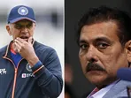

With VVS Laxman taking charge of the Indian cricket team as the interim head coach for their six-match series in New Zealand in place of Rahul Dravid, Ravi Shastri has questioned the decision of Team India's coaching staff being granted frequent breaks.
With VVS Laxman taking charge of the Indian cricket team as the interim head coach for their six-match series in New Zealand in place of Rahul Dravid, Ravi Shastri has questioned the decision of Team India's coaching staff being granted frequent breaks. This is not the first time that the Dravid-led department will not be around as Laxman oversaw proceedings when India toured Zimbabwe and Ireland earlier this year. Of course, Dravid and Co. had to give the Ireland tour a miss as the senior squad in England prepping up for the ODI and T20I series; However, Dravid was absent when India beat Zimbabwe in August, as well as during last month's home series against South Africa.
Shastri, who when as coach, was active pretty much the entire time irrespective of whichever team played, is not in favour of Dravid's constant breaks, pointing out that the regular gaps can affect the coach-player relationship. In fact, one of the reasons why Shastri decided not to continue as India's head coach for another term is because it required him to be on the road all the time, something the former all-rounder admitted he couldn't, given the toll being at helm for seven years took on him. So, while the players' workload management has rightfully taken precedence, Shastri believes that for the same practice be implemented on the coaching setup cannot be the way forward.
"I do not believe is breaks," Shastri said during a virtual press conference on the eve of the first T20I between India and New Zealand in Wellington. "Because I want to understand my team, I want to understand my players and I want to then, be in control of that team. These breaks... what do you need that many breaks for to be honest? You get your 2-3 months of the IPL, that's enough for you to rest as a coach. But other times, I think a coach should be hands on, whoever he is."